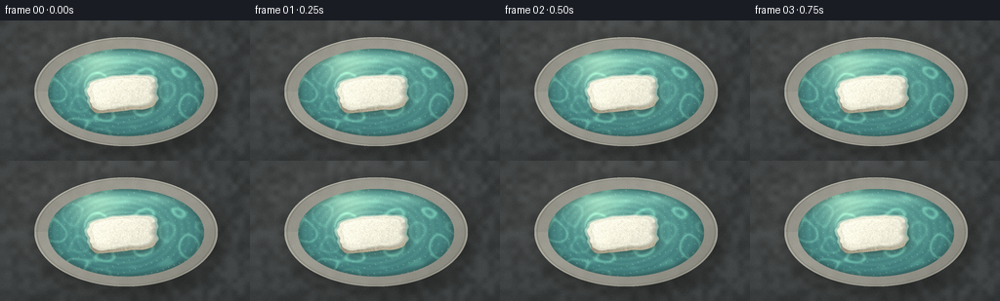
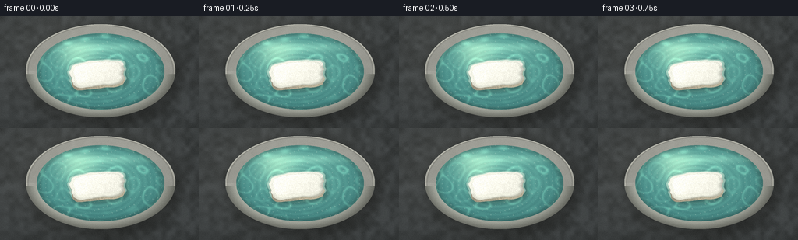
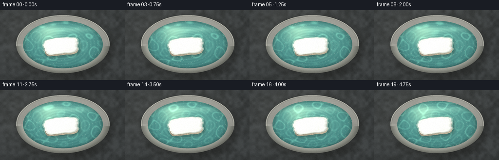
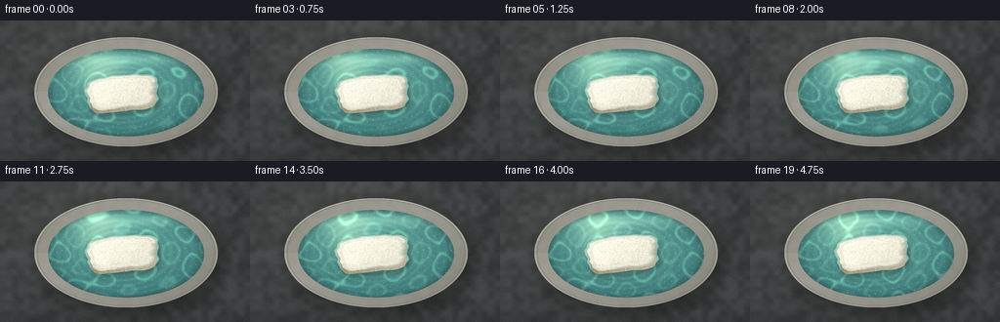
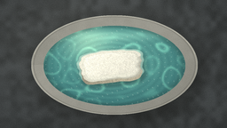
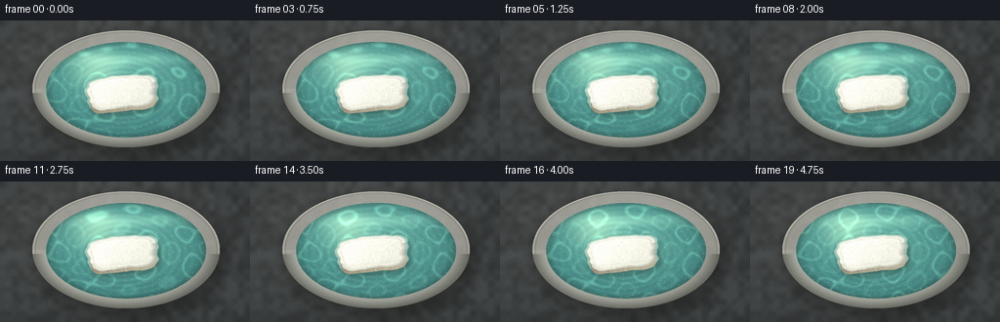
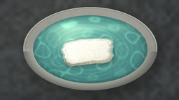
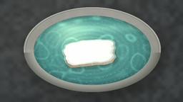
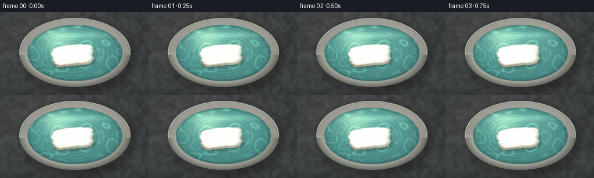

CODING AGENTS AS PIXEL WORLD MODELS
traex/DeepSeek-V4.1-Flash · mechanics_0014
点击播放 · 原生 RGB 像素
逐轮保存的候选
回放视频、检查图与代码变化。
每份候选均可单独播放。实际图片检查记录在下方工具轨迹中。
候选 01播放与检查图
点击播放 · 原生 RGB 像素


展开代码变化
--- 上一保存版本
+++ 本次保存版本
@@ -0,0 +1,257 @@
+from pathlib import Path
+
+import numpy as np
+from PIL import Image, ImageFilter
+
+import artifact_io
+
+
+ROOT = Path(__file__).resolve().parent
+WIDTH, HEIGHT = 256, 144
+FRAME_COUNT, FPS = 20, 4.0
+SS = 4
+
+
+def smoothstep(edge0, edge1, x):
+ t = np.clip((x - edge0) / (edge1 - edge0), 0.0, 1.0)
+ return t * t * (3.0 - 2.0 * t)
+
+
+def gaussian_blur(array, radius):
+ image = Image.fromarray(np.clip(array * 255.0, 0, 255).astype(np.uint8), "L")
+ return np.asarray(image.filter(ImageFilter.GaussianBlur(radius)), dtype=np.float32) / 255.0
+
+
+def make_noise(rng, shape, scale, octaves=4):
+ """Smooth deterministic noise made from upsampled coarse random fields."""
+ h, w = shape
+ total = np.zeros(shape, dtype=np.float32)
+ amplitude_sum = 0.0
+ for octave in range(octaves):
+ coarse_w = max(3, int(w / (scale * (2**octave))))
+ coarse_h = max(3, int(h / (scale * (2**octave))))
+ small = rng.random((coarse_h, coarse_w), dtype=np.float32)
+ layer = np.asarray(
+ Image.fromarray((small * 255).astype(np.uint8), "L").resize(
+ (w, h), Image.Resampling.BICUBIC
+ ),
+ dtype=np.float32,
+ ) / 255.0
+ amp = 0.55**octave
+ total += amp * layer
+ amplitude_sum += amp
+ total /= amplitude_sum
+ lo, hi = np.percentile(total, [2, 98])
+ return np.clip((total - lo) / max(hi - lo, 1e-5), 0.0, 1.0)
+
+
+def over(base, color, alpha):
+ alpha = np.clip(alpha, 0.0, 1.0)[..., None]
+ return base * (1.0 - alpha) + np.asarray(color, dtype=np.float32) * alpha
+
+
+def render_frame(frame_index, background, table_noise, foam_noise, pore_noise):
+ t = frame_index / FPS
+ h, w = HEIGHT * SS, WIDTH * SS
+ yy, xx = np.mgrid[0:h, 0:w].astype(np.float32)
+ x = xx / SS
+ y = yy / SS
+
+ # Quiet, slightly cool tabletop with a soft pool of window light.
+ vignette = np.exp(-(((x - 128) / 165) ** 2 + ((y - 72) / 108) ** 2))
+ light_pool = np.exp(-(((x - 96) / 125) ** 2 + ((y - 42) / 85) ** 2))
+ image = np.empty((h, w, 3), dtype=np.float32)
+ image[:] = np.array([46, 50, 54], dtype=np.float32)
+ image += (table_noise[..., None] - 0.5) * np.array([19, 20, 21], dtype=np.float32)
+ image += light_pool[..., None] * np.array([15, 14, 12], dtype=np.float32)
+ image *= (0.72 + 0.28 * vignette)[..., None]
+ image += background[..., None] * 0.20
+
+ # Bowl geometry, viewed from a high three-quarter angle.
+ cx, cy = 129.0, 73.0
+ rx, ry = 94.0, 56.0
+ irx, iry = 80.0, 45.0
+ q_out = np.sqrt(((x - cx) / rx) ** 2 + ((y - cy) / ry) ** 2)
+ q_in = np.sqrt(((x - cx) / irx) ** 2 + ((y - (cy + 0.8)) / iry) ** 2)
+ outer = q_out < 1.0
+ inner = q_in < 1.0
+ ring = outer & ~inner
+
+ # Table contact shadow, with a tighter dark line under the front lip.
+ shadow_src = np.where(
+ np.sqrt(((x - cx - 3.0) / (rx + 5.0)) ** 2 + ((y - cy - 7.0) / (ry + 7.0)) ** 2) < 1.0,
+ 1.0,
+ 0.0,
+ ).astype(np.float32)
+ bowl_shadow = gaussian_blur(shadow_src, 8.5 * SS)
+ image *= (1.0 - 0.43 * bowl_shadow[..., None])
+
+ # Ceramic rim: broad warm glaze, blue reflected light, beveled edges.
+ angle = np.arctan2((y - cy) / ry, (x - cx) / rx)
+ radial_band = np.clip((1.0 - q_out) / np.maximum(1.0 - q_in, 0.025), 0.0, 1.0)
+ glaze = np.empty((h, w, 3), dtype=np.float32)
+ glaze[:] = np.array([211, 207, 193], dtype=np.float32)
+ glaze += (table_noise[..., None] - 0.5) * 8.0
+ rim_light = 0.70 + 0.30 * np.cos(angle + 2.55) * np.sin(angle * 0.5 + 1.0)
+ glaze *= (0.80 + 0.22 * rim_light)[..., None]
+ glaze += np.array([13, 17, 19], dtype=np.float32) * smoothstep(0.80, 0.0, radial_band)[..., None]
+ glaze -= np.array([25, 23, 19], dtype=np.float32) * smoothstep(0.70, 1.0, radial_band)[..., None]
+ glaze += np.array([22, 25, 26], dtype=np.float32) * (
+ np.exp(-((radial_band - 0.20) / 0.055) ** 2) * (0.35 + 0.65 * np.clip(np.cos(angle + 2.6), 0, 1))
+ )[..., None]
+ outer_bevel = smoothstep(0.95, 1.0, q_out)
+ glaze *= (1.0 - 0.34 * outer_bevel)[..., None]
+ inner_lip_shadow = smoothstep(0.80, 1.0, radial_band)
+ glaze *= (1.0 - 0.24 * inner_lip_shadow)[..., None]
+ image = over(image, glaze, ring.astype(np.float32))
+
+ # The pale back lip catches a narrow, clean highlight.
+ back_highlight = (
+ ring
+ & (np.abs(radial_band - 0.42) < 0.08)
+ & (np.sin(angle) < -0.22)
+ )
+ image = over(image, np.array([246, 243, 226]), back_highlight.astype(np.float32) * 0.38)
+
+ # Water: transparent aqua, darker at the bowl wall, brighter under the skylight.
+ water_gradient = np.clip(1.0 - q_in, 0.0, 1.0)
+ water = np.empty((h, w, 3), dtype=np.float32)
+ water[:] = np.array([46, 105, 107], dtype=np.float32)
+ water += water_gradient[..., None] * np.array([29, 35, 28], dtype=np.float32)
+ water += np.clip((1.0 - y / 105.0), 0.0, 1.0)[..., None] * np.array([14, 18, 14], dtype=np.float32)
+ water *= (0.93 + 0.10 * light_pool)[..., None]
+
+ # Broad window reflection across the water.
+ window = np.exp(-(((x - 99.0) / 43.0) ** 2 + ((y - 49.0) / 19.0) ** 2))
+ window *= 0.65 + 0.35 * np.cos((x - 99.0) * 0.075)
+ water += window[..., None] * np.array([58, 52, 35], dtype=np.float32)
+
+ # Two crossing wave trains form moving caustic filaments.
+ p1 = 0.092 * x + 0.071 * y + 0.42 * np.sin(0.037 * y + 0.58 * t)
+ p2 = -0.060 * x + 0.116 * y + 0.36 * np.sin(0.043 * x - 0.46 * t + 1.7)
+ p3 = 0.126 * x + 0.026 * y - 0.45 * np.sin(0.034 * y - 0.35 * t + 0.3)
+ wave = np.sin(p1) * np.sin(p2) + 0.50 * np.sin(p3 + 0.8 * np.sin(p2))
+ caustic = np.exp(-((wave - 0.54) / 0.105) ** 2)
+ caustic += 0.45 * np.exp(-((wave + 0.66) / 0.12) ** 2)
+ caustic = gaussian_blur(caustic, 0.7 * SS)
+ water += caustic[..., None] * np.array([40, 58, 43], dtype=np.float32)
+
+ # Gentle ripples radiating from the floating piece.
+ foam_cx = 124.5 + 0.75 * np.sin(0.55 * t + 0.4)
+ foam_cy = 73.2 + 0.35 * np.sin(0.82 * t + 1.1)
+ foam_angle = -0.10 + 0.012 * np.sin(0.70 * t + 0.5)
+ dx0 = x - foam_cx
+ dy0 = y - foam_cy
+ dist = np.sqrt((dx0 * 1.04) ** 2 + (dy0 * 1.55) ** 2)
+ ripple = np.cos(0.78 * dist - 3.2 * t) * np.exp(-dist / 47.0)
+ ripple *= smoothstep(23.0, 34.0, dist)
+ water += ripple[..., None] * np.array([11, 15, 12], dtype=np.float32)
+
+ # A warm, soft reflection of the rear lip.
+ rear_reflection = np.exp(-(((x - 130.0) / 62.0) ** 2 + ((y - 40.0) / 6.0) ** 2))
+ water += rear_reflection[..., None] * np.array([37, 39, 30], dtype=np.float32)
+ water *= (1.0 - 0.20 * smoothstep(0.88, 1.0, q_in))[..., None]
+ image = over(image, water, inner.astype(np.float32))
+
+ # Fine water sparkle, restrained so it reads as surface rather than noise.
+ sparkle_field = np.sin(0.55 * x + 0.31 * y + 4.0 * np.sin(0.09 * y + t))
+ sparkle_field *= np.sin(-0.34 * x + 0.61 * y - 2.6 * t)
+ sparkle = smoothstep(0.86, 0.99, sparkle_field) * inner
+ image = over(image, np.array([218, 230, 211]), sparkle * 0.23)
+
+ # Foam block coordinate system and irregular rounded outline.
+ ca, sa = np.cos(foam_angle), np.sin(foam_angle)
+ lx = (x - foam_cx) * ca + (y - foam_cy) * sa
+ ly = -(x - foam_cx) * sa + (y - foam_cy) * ca
+ theta = np.arctan2(ly / 17.0, lx / 35.0)
+ edge_wobble = 0.030 * np.sin(5.0 * theta + 0.4) + 0.016 * np.sin(11.0 * theta - 0.7)
+ edge_wobble += 0.009 * np.sin(19.0 * theta + 1.6)
+ q_foam = (np.abs(lx / 34.2) ** 4.4 + np.abs(ly / 16.3) ** 4.4) ** (1.0 / 4.4)
+ q_foam += edge_wobble
+ foam_top = q_foam < 1.0
+ foam_side = ((np.abs(lx / 34.5) ** 4.4 + np.abs((ly - 3.0) / 16.6) ** 4.4) ** (1.0 / 4.4)
+ + edge_wobble * 0.9) < 1.0
+ foam_side &= ~foam_top
+
+ # Contact shadow and wet meniscus.
+ foam_shadow_src = (
+ (np.abs((lx - 2.0) / 37.0) ** 4.0 + np.abs((ly - 4.0) / 19.0) ** 4.0) ** 0.25 < 1.0
+ ).astype(np.float32)
+ foam_shadow = gaussian_blur(foam_shadow_src, 2.8 * SS)
+ image *= (1.0 - 0.36 * foam_shadow[..., None] * inner[..., None])
+ meniscus = (q_foam > 0.985) & (q_foam < 1.085) & inner
+ image = over(image, np.array([190, 219, 203]), meniscus.astype(np.float32) * 0.58)
+ wet_edge = (q_foam > 1.055) & (q_foam < 1.105) & inner
+ image = over(image, np.array([27, 78, 80]), wet_edge.astype(np.float32) * 0.20)
+
+ # Extruded side is visible on the lower edge, giving the slab real thickness.
+ side_shade = np.clip(0.76 + 0.16 * np.cos(theta - 0.8), 0.0, 1.0)
+ side_color = np.array([178, 169, 147], dtype=np.float32) * side_shade[..., None]
+ side_color += (foam_noise[..., None] - 0.5) * np.array([28, 25, 20], dtype=np.float32)
+ side_color *= (0.88 + 0.12 * np.clip((ly + 18.0) / 12.0, 0, 1))[..., None]
+ image = over(image, side_color, foam_side.astype(np.float32))
+
+ # Foam top: warm white, softly beveled, with fine cellular surface texture.
+ bevel = smoothstep(0.80, 1.0, q_foam)
+ foam = np.empty((h, w, 3), dtype=np.float32)
+ foam[:] = np.array([229, 226, 211], dtype=np.float32)
+ foam += (foam_noise[..., None] - 0.5) * np.array([25, 24, 20], dtype=np.float32)
+ foam += (pore_noise[..., None] - 0.5) * np.array([12, 12, 10], dtype=np.float32)
+ directional = np.clip(0.54 + 0.34 * (-lx / 35.0) + 0.22 * (-ly / 17.0), 0.0, 1.0)
+ foam *= (0.90 + 0.15 * directional)[..., None]
+ foam *= (1.0 - 0.26 * bevel)[..., None]
+ foam += np.array([9, 11, 10], dtype=np.float32) * smoothstep(0.62, 1.0, q_foam)[..., None]
+
+ # A handful of larger pores and chips break up the otherwise smooth surface.
+ pores = pore_noise > 0.79
+ pores &= q_foam < 0.91
+ foam = over(foam, np.array([167, 160, 142]), pores.astype(np.float32) * 0.40)
+ tiny_chips = (pore_noise > 0.89) & (q_foam > 0.82) & (q_foam < 1.0)
+ foam = over(foam, np.array([185, 176, 155]), tiny_chips.astype(np.float32) * 0.50)
+ wet_lower = foam_top & (ly > 10.0)
+ foam = over(foam, np.array([191, 192, 175]), wet_lower.astype(np.float32) * 0.20)
+ image = over(image, foam, foam_top.astype(np.float32))
+
+ # Crisp upper-left edge light and a dark lower-right contact edge.
+ top_edge = foam_top & (q_foam > 0.91) & (q_foam < 1.0)
+ lit_edge = top_edge & ((lx < -8.0) | (ly < -7.0))
+ image = over(image, np.array([247, 244, 226]), lit_edge.astype(np.float32) * 0.45)
+ lower_edge = foam_top & (q_foam > 0.92) & (ly > 8.0)
+ image = over(image, np.array([139, 135, 117]), lower_edge.astype(np.float32) * 0.22)
+
+ # Final optical treatment: gentle bloom, filmic contrast, vignette.
+ luma = image @ np.array([0.2126, 0.7152, 0.0722], dtype=np.float32)
+ bright = np.clip(luma - 0.66, 0.0, None)
+ bright_image = gaussian_blur(bright, 3.2 * SS)
+ image += bright_image[..., None] * np.array([18, 18, 15], dtype=np.float32)
+ image = (image - 5.0) * 1.035 + 5.0
+ image *= (0.88 + 0.12 * vignette)[..., None]
+
+ # Downsample cleanly, then add a very light sensor grain at output resolution.
+ out = np.clip(image, 0, 255).astype(np.uint8)
+ out_image = Image.fromarray(out, "RGB").resize((WIDTH, HEIGHT), Image.Resampling.LANCZOS)
+ result = np.asarray(out_image, dtype=np.float32)
+ rng = np.random.default_rng(8000 + frame_index)
+ grain = rng.normal(0.0, 1.15, (HEIGHT, WIDTH, 1)).astype(np.float32)
+ result += grain
+ return np.clip(result, 0, 255).astype(np.uint8)
+
+
+def main():
+ rng = np.random.default_rng(20261111)
+ h, w = HEIGHT * SS, WIDTH * SS
+ background = make_noise(rng, (h, w), 90, octaves=4)
+ table_noise = make_noise(rng, (h, w), 24, octaves=4)
+ foam_noise = make_noise(rng, (h, w), 3.2, octaves=3)
+ pore_noise = make_noise(rng, (h, w), 1.25, octaves=2)
+ frames = [
+ render_frame(i, background, table_noise, foam_noise, pore_noise)
+ for i in range(FRAME_COUNT)
+ ]
+ frames = np.stack(frames)
+ artifact_io.save(frames, ROOT)
+ print(f"Saved {len(frames)} frames to {ROOT}")
+
+
+if __name__ == "__main__":
+ main()
候选 02播放与检查图
点击播放 · 原生 RGB 像素


展开代码变化
--- 上一保存版本
+++ 本次保存版本
@@ -68,9 +68,9 @@
image += background[..., None] * 0.20
# Bowl geometry, viewed from a high three-quarter angle.
- cx, cy = 129.0, 73.0
- rx, ry = 94.0, 56.0
- irx, iry = 80.0, 45.0
+ cx, cy = 129.0, 70.0
+ rx, ry = 96.0, 60.0
+ irx, iry = 82.0, 49.0
q_out = np.sqrt(((x - cx) / rx) ** 2 + ((y - cy) / ry) ** 2)
q_in = np.sqrt(((x - cx) / irx) ** 2 + ((y - (cy + 0.8)) / iry) ** 2)
outer = q_out < 1.0
@@ -90,13 +90,13 @@
angle = np.arctan2((y - cy) / ry, (x - cx) / rx)
radial_band = np.clip((1.0 - q_out) / np.maximum(1.0 - q_in, 0.025), 0.0, 1.0)
glaze = np.empty((h, w, 3), dtype=np.float32)
- glaze[:] = np.array([211, 207, 193], dtype=np.float32)
+ glaze[:] = np.array([218, 216, 205], dtype=np.float32)
glaze += (table_noise[..., None] - 0.5) * 8.0
rim_light = 0.70 + 0.30 * np.cos(angle + 2.55) * np.sin(angle * 0.5 + 1.0)
glaze *= (0.80 + 0.22 * rim_light)[..., None]
glaze += np.array([13, 17, 19], dtype=np.float32) * smoothstep(0.80, 0.0, radial_band)[..., None]
glaze -= np.array([25, 23, 19], dtype=np.float32) * smoothstep(0.70, 1.0, radial_band)[..., None]
- glaze += np.array([22, 25, 26], dtype=np.float32) * (
+ glaze += np.array([29, 34, 35], dtype=np.float32) * (
np.exp(-((radial_band - 0.20) / 0.055) ** 2) * (0.35 + 0.65 * np.clip(np.cos(angle + 2.6), 0, 1))
)[..., None]
outer_bevel = smoothstep(0.95, 1.0, q_out)
@@ -105,6 +105,18 @@
glaze *= (1.0 - 0.24 * inner_lip_shadow)[..., None]
image = over(image, glaze, ring.astype(np.float32))
+ # The inner ceramic wall descends into the water; its front section stays
+ # visible above the surface and establishes the bowl's actual depth.
+ wall_outer = q_out < 1.0
+ wall_inner = q_in < 1.0
+ wall = wall_outer & ~wall_inner
+ wall_depth = np.clip((q_out - 0.86) / 0.14, 0.0, 1.0)
+ wall_light = np.clip(0.72 + 0.20 * np.cos(angle + 2.8), 0.0, 1.0)
+ ceramic_wall = np.broadcast_to(np.array([157, 160, 152], dtype=np.float32), (h, w, 3)).copy()
+ ceramic_wall *= (0.70 + 0.28 * wall_light)[..., None]
+ ceramic_wall *= (1.0 - 0.38 * wall_depth[..., None])
+ image = over(image, ceramic_wall, (wall & (y > cy + 4.0)).astype(np.float32))
+
# The pale back lip catches a narrow, clean highlight.
back_highlight = (
ring
@@ -116,7 +128,7 @@
# Water: transparent aqua, darker at the bowl wall, brighter under the skylight.
water_gradient = np.clip(1.0 - q_in, 0.0, 1.0)
water = np.empty((h, w, 3), dtype=np.float32)
- water[:] = np.array([46, 105, 107], dtype=np.float32)
+ water[:] = np.array([50, 113, 113], dtype=np.float32)
water += water_gradient[..., None] * np.array([29, 35, 28], dtype=np.float32)
water += np.clip((1.0 - y / 105.0), 0.0, 1.0)[..., None] * np.array([14, 18, 14], dtype=np.float32)
water *= (0.93 + 0.10 * light_pool)[..., None]
@@ -134,7 +146,7 @@
caustic = np.exp(-((wave - 0.54) / 0.105) ** 2)
caustic += 0.45 * np.exp(-((wave + 0.66) / 0.12) ** 2)
caustic = gaussian_blur(caustic, 0.7 * SS)
- water += caustic[..., None] * np.array([40, 58, 43], dtype=np.float32)
+ water += caustic[..., None] * np.array([31, 45, 35], dtype=np.float32)
# Gentle ripples radiating from the floating piece.
foam_cx = 124.5 + 0.75 * np.sin(0.55 * t + 0.4)
@@ -194,9 +206,9 @@
# Foam top: warm white, softly beveled, with fine cellular surface texture.
bevel = smoothstep(0.80, 1.0, q_foam)
foam = np.empty((h, w, 3), dtype=np.float32)
- foam[:] = np.array([229, 226, 211], dtype=np.float32)
- foam += (foam_noise[..., None] - 0.5) * np.array([25, 24, 20], dtype=np.float32)
- foam += (pore_noise[..., None] - 0.5) * np.array([12, 12, 10], dtype=np.float32)
+ foam[:] = np.array([235, 234, 224], dtype=np.float32)
+ foam += (foam_noise[..., None] - 0.5) * np.array([18, 19, 18], dtype=np.float32)
+ foam += (pore_noise[..., None] - 0.5) * np.array([9, 10, 10], dtype=np.float32)
directional = np.clip(0.54 + 0.34 * (-lx / 35.0) + 0.22 * (-ly / 17.0), 0.0, 1.0)
foam *= (0.90 + 0.15 * directional)[..., None]
foam *= (1.0 - 0.26 * bevel)[..., None]
@@ -205,9 +217,9 @@
# A handful of larger pores and chips break up the otherwise smooth surface.
pores = pore_noise > 0.79
pores &= q_foam < 0.91
- foam = over(foam, np.array([167, 160, 142]), pores.astype(np.float32) * 0.40)
+ foam = over(foam, np.array([177, 176, 164]), pores.astype(np.float32) * 0.33)
tiny_chips = (pore_noise > 0.89) & (q_foam > 0.82) & (q_foam < 1.0)
- foam = over(foam, np.array([185, 176, 155]), tiny_chips.astype(np.float32) * 0.50)
+ foam = over(foam, np.array([192, 191, 177]), tiny_chips.astype(np.float32) * 0.42)
wet_lower = foam_top & (ly > 10.0)
foam = over(foam, np.array([191, 192, 175]), wet_lower.astype(np.float32) * 0.20)
image = over(image, foam, foam_top.astype(np.float32))
@@ -215,7 +227,7 @@
# Crisp upper-left edge light and a dark lower-right contact edge.
top_edge = foam_top & (q_foam > 0.91) & (q_foam < 1.0)
lit_edge = top_edge & ((lx < -8.0) | (ly < -7.0))
- image = over(image, np.array([247, 244, 226]), lit_edge.astype(np.float32) * 0.45)
+ image = over(image, np.array([249, 248, 238]), lit_edge.astype(np.float32) * 0.48)
lower_edge = foam_top & (q_foam > 0.92) & (ly > 8.0)
image = over(image, np.array([139, 135, 117]), lower_edge.astype(np.float32) * 0.22)
候选 03播放与检查图
点击播放 · 原生 RGB 像素

展开代码变化
--- 上一保存版本
+++ 本次保存版本
@@ -206,22 +206,22 @@
# Foam top: warm white, softly beveled, with fine cellular surface texture.
bevel = smoothstep(0.80, 1.0, q_foam)
foam = np.empty((h, w, 3), dtype=np.float32)
- foam[:] = np.array([235, 234, 224], dtype=np.float32)
- foam += (foam_noise[..., None] - 0.5) * np.array([18, 19, 18], dtype=np.float32)
- foam += (pore_noise[..., None] - 0.5) * np.array([9, 10, 10], dtype=np.float32)
- directional = np.clip(0.54 + 0.34 * (-lx / 35.0) + 0.22 * (-ly / 17.0), 0.0, 1.0)
- foam *= (0.90 + 0.15 * directional)[..., None]
- foam *= (1.0 - 0.26 * bevel)[..., None]
- foam += np.array([9, 11, 10], dtype=np.float32) * smoothstep(0.62, 1.0, q_foam)[..., None]
+ foam[:] = np.array([241, 243, 237], dtype=np.float32)
+ foam += (foam_noise[..., None] - 0.5) * np.array([10, 11, 11], dtype=np.float32)
+ foam += (pore_noise[..., None] - 0.5) * np.array([6, 7, 7], dtype=np.float32)
+ directional = np.clip(0.55 + 0.32 * (-lx / 35.0) + 0.20 * (-ly / 17.0), 0.0, 1.0)
+ foam *= (0.945 + 0.095 * directional)[..., None]
+ foam *= (1.0 - 0.19 * bevel)[..., None]
+ foam += np.array([7, 9, 9], dtype=np.float32) * smoothstep(0.62, 1.0, q_foam)[..., None]
# A handful of larger pores and chips break up the otherwise smooth surface.
- pores = pore_noise > 0.79
+ pores = pore_noise > 0.84
pores &= q_foam < 0.91
- foam = over(foam, np.array([177, 176, 164]), pores.astype(np.float32) * 0.33)
- tiny_chips = (pore_noise > 0.89) & (q_foam > 0.82) & (q_foam < 1.0)
- foam = over(foam, np.array([192, 191, 177]), tiny_chips.astype(np.float32) * 0.42)
+ foam = over(foam, np.array([188, 193, 186]), pores.astype(np.float32) * 0.30)
+ tiny_chips = (pore_noise > 0.92) & (q_foam > 0.82) & (q_foam < 1.0)
+ foam = over(foam, np.array([207, 211, 203]), tiny_chips.astype(np.float32) * 0.38)
wet_lower = foam_top & (ly > 10.0)
- foam = over(foam, np.array([191, 192, 175]), wet_lower.astype(np.float32) * 0.20)
+ foam = over(foam, np.array([206, 216, 207]), wet_lower.astype(np.float32) * 0.18)
image = over(image, foam, foam_top.astype(np.float32))
# Crisp upper-left edge light and a dark lower-right contact edge.
候选 04播放与检查图
点击播放 · 原生 RGB 像素

展开代码变化
--- 上一保存版本
+++ 本次保存版本
@@ -1,5 +1,6 @@
from pathlib import Path
+import cv2
import numpy as np
from PIL import Image, ImageFilter
@@ -18,7 +19,7 @@
def gaussian_blur(array, radius):
- image = Image.fromarray(np.clip(array * 255.0, 0, 255).astype(np.uint8), "L")
+ image = Image.fromarray(np.clip(array * 255.0, 0, 255).astype(np.uint8))
return np.asarray(image.filter(ImageFilter.GaussianBlur(radius)), dtype=np.float32) / 255.0
@@ -32,7 +33,7 @@
coarse_h = max(3, int(h / (scale * (2**octave))))
small = rng.random((coarse_h, coarse_w), dtype=np.float32)
layer = np.asarray(
- Image.fromarray((small * 255).astype(np.uint8), "L").resize(
+ Image.fromarray((small * 255).astype(np.uint8)).resize(
(w, h), Image.Resampling.BICUBIC
),
dtype=np.float32,
@@ -241,7 +242,7 @@
# Downsample cleanly, then add a very light sensor grain at output resolution.
out = np.clip(image, 0, 255).astype(np.uint8)
- out_image = Image.fromarray(out, "RGB").resize((WIDTH, HEIGHT), Image.Resampling.LANCZOS)
+ out_image = Image.fromarray(out).resize((WIDTH, HEIGHT), Image.Resampling.LANCZOS)
result = np.asarray(out_image, dtype=np.float32)
rng = np.random.default_rng(8000 + frame_index)
grain = rng.normal(0.0, 1.15, (HEIGHT, WIDTH, 1)).astype(np.float32)
@@ -262,6 +263,17 @@
]
frames = np.stack(frames)
artifact_io.save(frames, ROOT)
+ writer = cv2.VideoWriter(
+ str(ROOT / "output.mp4"),
+ cv2.VideoWriter_fourcc(*"mp4v"),
+ FPS,
+ (WIDTH, HEIGHT),
+ )
+ if not writer.isOpened():
+ raise RuntimeError("Could not open the MP4 encoder")
+ for frame in frames:
+ writer.write(cv2.cvtColor(frame, cv2.COLOR_RGB2BGR))
+ writer.release()
print(f"Saved {len(frames)} frames to {ROOT}")
可观测工具轨迹
实际执行的命令与返回图片。
命令 1exit 0
/bin/bash -c "pwd && rg --files -g '"'!*.mp4'"' -g '"'!*.png'"' -g '"'!*.jpg'"' -g '"'!*.jpeg'"' | sed -n '1,200p'"
命令 2exit 0
/bin/bash -c 'cat prompt.txt'
命令 3exit 0
/bin/bash -c 'cat GENERATION_RULES.md'
命令 4exit 0
/bin/bash -c 'cat task_spec.json'
命令 5exit 0
/bin/bash -c "find . -maxdepth 2 -type f -printf '%p\\n' | sort | sed -n '1,240p'"
命令 6exit 0
/bin/bash -c "sed -n '1,260p' artifact_io.py"
命令 7exit 0
/bin/bash -c "sed -n '1,260p' player_template.html"
命令 8exit 0
/bin/bash -c "python - <<'PY'
import numpy, PIL
print('numpy', numpy.__version__)
print('PIL', PIL.__version__)
PY"命令 9exit 0
/bin/bash -c "python - <<'PY'
try:
import scipy; print('scipy', scipy.__version__)
except Exception as e: print('no scipy',e)
try:
import cv2; print('cv2', cv2.__version__)
except Exception as e: print('no cv2',e)
PY"命令 10exit 1
/bin/bash -c 'python generate.py'
命令 11exit 0
/bin/bash -c 'python generate.py'
命令 12exit 0
/bin/bash -c 'mkdir -p candidates/candidate_01 && cp -r frames inspection.png transition_check.png pixels.npz index.html candidates/candidate_01/'
命令 13exit 1
/bin/bash -c 'python generate.py'
命令 14exit 0
/bin/bash -c 'python generate.py'
命令 15exit 0
/bin/bash -c 'mkdir -p candidates/candidate_02 && cp -r frames inspection.png transition_check.png pixels.npz index.html candidates/candidate_02/'
命令 16exit 0
/bin/bash -c 'python generate.py'
命令 17exit 0
/bin/bash -c 'command -v ffmpeg || true; command -v ffprobe || true; du -sh frames pixels.npz index.html inspection.png'
命令 18exit 0
/bin/bash -c "python - <<'PY'
from pathlib import Path
import numpy as np
from PIL import Image
frames=np.stack([np.asarray(Image.open(p)) for p in sorted(Path('frames').glob('*.png'))])
print('shape',frames.shape,'dtype',frames.dtype)
d=np.abs(frames[1:].astype(float)-frames[:-1]).mean(axis=(1,2,3))
print('adjacent mean abs diff:', np.round(d,3).tolist())
print('range',frames.min(),frames.max(),'mean',np.round(frames.mean(axis=(0,1,2)),2))
z=np.load('pixels.npz')['pixels']
print('npz',z.shape,z.dtype,'nonzero',int(np.count_nonzero(z)))
PY"命令 19exit 0
/bin/bash -c 'git status --short 2>/dev/null || true'
命令 20exit 0
/bin/bash -c "sed -n '1,48p' generate.py"
命令 21exit 0
/bin/bash -c "sed -n '230,280p' generate.py"
命令 22exit 0
/bin/bash -c 'python generate.py'
命令 23exit 0
/bin/bash -c "python - <<'PY'
import cv2
p='output.mp4'
cap=cv2.VideoCapture(p)
count=int(cap.get(cv2.CAP_PROP_FRAME_COUNT)); fps=cap.get(cv2.CAP_PROP_FPS); w=int(cap.get(cv2.CAP_PROP_FRAME_WIDTH)); h=int(cap.get(cv2.CAP_PROP_FRAME_HEIGHT))
ok, f=cap.read()
print({'frames':count,'fps':fps,'width':w,'height':h,'read':ok,'first_mean':round(float(f.mean()),2) if ok else None})
cap.release()
PY"命令 24exit 0
/bin/bash -c 'ls -lh generate.py output.mp4 pixels.npz index.html inspection.png frames/00.png frames/19.png && python -m py_compile generate.py && sha256sum output.mp4 pixels.npz'
视觉工具实际返回图片 1

视觉工具实际返回图片 2

视觉工具实际返回图片 3

视觉工具实际返回图片 4

视觉工具实际返回图片 5

视觉工具实际返回图片 6

视觉工具实际返回图片 7

保存候选 4 份；完成命令 24 次；可验证图片返回 7 张。原始 API 响应与完整日志保留在本地。